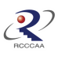

Hi, I'm Zhaoyang, an undergraduate studying Artificial Intelligence at Shanghai University.
My research interests lie in embodied intelligence, robot visual perception, and human-to-robot motion retargeting. I work on translating human motion from monocular video into continuous motion for humanoid robots.
I have also explored surface electromyography for understanding motor function in older adults and developed autonomous navigation systems with ROS. Along the way, programming competitions and mathematical modeling have shaped how I approach problems.
Completed a project on online humanoid motion retargeting from monocular video, integrating motion estimation and inverse kinematics.
Received Shanghai University's Innovation and Entrepreneurship Scholarship for the second time.
Our team won a National First Prize in the table tennis robot 2D skills finals at the China Robot Competition & RoboCup China.
Won silver medals at the ICPC Nanjing and Shenyang Regionals, and a bronze medal at CCPC Zhengzhou.
Publications
03
Current manuscripts · both under review
Under reviewFirst author
Monocular Video to Online Humanoid Motion Retargeting via Streaming Motion Estimation
Zhaoyang Lu and collaborators
Submitted to CAAI Transactions on Intelligence Technology
Streaming motion estimation and inverse-kinematics retargeting for continuous humanoid joint trajectories, evaluated on 3DPW and in Unitree G1/H1 simulation.
Under reviewCo-first author · listed first
Exploratory Functional Profiling of Older Adults Using Lower-Limb Surface Electromyography
Zhaoyang Lu and collaborators
Submitted to Computer Methods and Programs in Biomedicine Update
CNN–BiLSTM representations of lower-limb muscle activity for exploratory functional profiling, with subject-level nested leave-one-out validation.
Honors & Awards
04
2024, 2025
Innovation and Entrepreneurship Scholarship
Shanghai University
2025

National First Prize · China Robot Competition & RoboCup China
Table tennis robot, 2D skills finals · 5th place
2025
Honorable Mention · MCM/ICM
Mathematical Contest in Modeling / Interdisciplinary Contest in Modeling
2024
Silver Medals · ICPC Asia Regionals
Nanjing Regional & Shenyang Regional
2024
Bronze Medal · CCPC Zhengzhou
China Collegiate Programming Contest
2024
National Second Prize · CUMCM
Contemporary Undergraduate Mathematical Contest in Modeling
2023
Provincial Second Prize · Chinese Mathematics Competitions
Non-mathematics Category A
Education
05
Shanghai University
Sep 2023 – Jul 2027 (expected)
Bachelor's studies in Artificial Intelligence
GPA 3.65 / 4.0
Selected coursework: Machine Learning, Data Structures, Computer Networks, Operating Systems, and Virtual Reality.
Hobbies
06
Outside of research, I enjoy the challenge of competitive programming, the worlds of anime, comics and games, and going for a run.